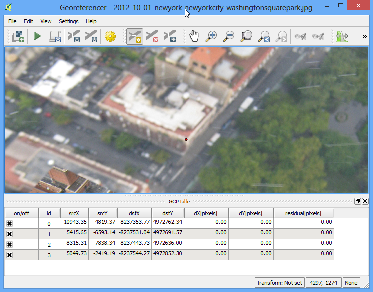

Georeferencing Aerial Imagery
[ Download PDF A4
Letter ]
Oppaassa Georeferencing Topo Sheets and Scanned Maps tarkastelemme georeferoinnin perusmenettelyä QGIS:ssa. Tuohon menetelmäään sisältyi koordinaattien lukeminen skannatusta kartasta ja niiden syöttäminen manuaalisesti. Usein ei kuitenkaan ole koordinaatteja tulostetussa kartassa tai yrität georeferoida kuvaa. Tässä tapauksessa voit käyttää toista georeferoitua aineistoa lähteenä. Tässä oppaassa opit kuinka käyttää avaoimen datan lähteitä georeferointi prosessissa.
Katsaus tehtävään
Georeferoimme korkearesoluutioista ilmapallokuvaa käyttäen koordinaatteja OpenStreeMap:sta.
Muita taitoja joita tulet oppimaan
Super korkearesoluutioden avoimen kuvaianeiston lataaminen.
OpenLayers liitännäisen käyttö QGIS:ssä.
Koordinaattien konvertointi eri projektioiden välillä käyttäen cs2cs komentotulkki työkalua.
Olemassa olevan georeferoidun tason käyttö GCP pisteiden lähteenä Georeferointi työkalussa.
Räätälöidyn no-data arvon asettaminen tasolle.
Hanki tiedot
Tässä oppaassa käytämme eräitä upaeita leija ja ilmapallo kuvia joita The Public Laboratory on koonnut. Heiltä on tarjolla myös kuvien georeferoituja versioita, mutta me lataamme georeferoimattomat veriot ja georeferoimme ne QGIS:ssä käyden prosessin läpi. Jos pidät heidän tarjoamista kuvista, voit tutkia niitä myös Google Earth:ssa.
Lataa Washington Square Park, New York JPG kuva. Voit myös klikata oikealla JPG näppäintä ja valita Tallenna kohde levylle....
Menettely
- For this tutorial, we will be using the OpenStreetMap layer as our reference
layer. Install the OpenLayers plugin from . See Liitännäisiä käyttämään for more
information on using plugins in QGIS.

- Once installed, go to . This will add a layer of pre-rendered tiles created
from OpenStreetMap data.

- Now you have the OpenStreetMap layer loaded in QGIS. Note the Coordinate
Reference System (CRS) for this layer. It is set as EPSG 3857 Pseudo
Mercator. This is important to note, since the coordinates we infer from
this layer will be in this CRS.

- Now the task is to locate the general vicinity of the area that we are
trying to georeference. You can just use Pan and Zoom tools to locate that
area on the OpenStreetMap layer. But we can take this opportunity to
demonstrate another tool that may help you in future. We know that the image
we downloaded is for Washington Square Park in New York. If you search for
that place, you will be able to locate the wikipedia page for it. The
coordinates for the park are listed there.

- You will notice that the coordinates are in Degrees/Minute/Seconds and are
Latitude and Longitude. But since our layer is in Mercator projection, we
will need Mercator coordinates to locate the park. Here’s where a
command-line tool called cs2cs comes handy. If you have installed QGIS
from OSGeo4W installer, you will already have it installed on your system.
On Linux and Mac too, it comes pre-installed with QGIS. Launch a terminal
window and type cs2cs to check if it is available. Windows users can find
a terminal at .

- Once you have verified that the cs2cs tool exists on your system, it is time
to convert out Latitude and Longitude to Mercator coordinates. The way this
tool works is that you need to specify a source and
destination CRS. The CRS definition could be a PROJ4 string or an EPSG code. Since we already know the EPSG code for
out input and output CRS, we will use this. The simplest way to use the tool
is to supply the input coordinates on the command line itself. Note that the
tool accepts coordinates in the order X Y, so we need to enter Longitude
Latitude. Enter the following command in the terminal and press Enter. Note
that we need to escape the quotes (”) with a backslash (\). Once you press
enter, you will see the tool process the coordinates and print out output X Y
coordinates in EPSG 3857 CRS.
echo "-73d59'51\" 40d43'51\"" | cs2cs +init=EPSG:4326 +to +init=EPSG:3857
-8237364.02 4972720.34 0.00

- Copy these coordinates and switch to QGIS. At the bottom of the QGIS window,
you will see a textbox labeled Coordinates. Enter the coordinates there in
X,Y form. Press Enter. You will see the map shift a bit, but not zoom. To
zoom to the area, select 1:2500 scale from the Scale drop-down next to the
Coordinate box and press Enter.

- Voila! you now see Washington Square Park area on your canvas. Now it is
time to start georeferencing. Launch the Georeferencer from
. If you do not
see that menu item, you will need to enable the Georeferencer
GDAL plugin from .

- In the Georeferencer window, go to . Navigate to the downloaded JPG file and click Open.

- In the Coordinate Reference System Selector,
choose EPSG:3857 Pseudo Mercator

- Now click on the Add Point button on the toolbar and select an easily
identifiable location on the image. Corners, intersections, poles etc. make
good control points.

- Once you click on the image at a control point location, you will see a
pop-up asking you to enter map coordinates. Click the button
From map canvas.

- Find the same location in your reference layer, i.e. the OpenStreetMap
layer and click there. The coordinates are auto-populated from your click
on the map canvas. Click Ok. Similarly, choose at least 4 points on the
image and add their coordinates from the reference layer.

- Now go to

- Choose the settings as shown below. Make sure you the Load in
QGIS when done button is checked. Click OK. Back in the
Georeferencer window, go to . This will start the process of warping the image
using the GCPs and creating the target raster.

- Once the process finishes, you will see the georeferenced layer loaded in
QGIS. If all went well, you will see it nicely overlay the OpenStreetMap
layer.

- To make our output look nicer, let’s remove the black and white no-data
values. Right click on the image layer and choose Properties.

- Switch to the Transparency tab. We want to indicate that any
black or white pixels in the image are no-data values and should be made
transparent. Input 0 as the No data value. Also, in the
Custom transparency options, click the + button and
add 255 as the transparent pixels for each band and enter 100 as the
:Percent transparent. Click OK.

- Now you will see your georeferenced image nicely overlaid on the base layer.